screenshot_0 · full
[2180, 1304] → [2180, 1304] · 保留像素 100.0% · 场景 0
原图与选区

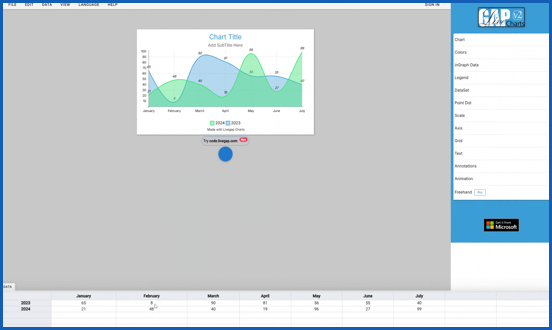
算法输出预览

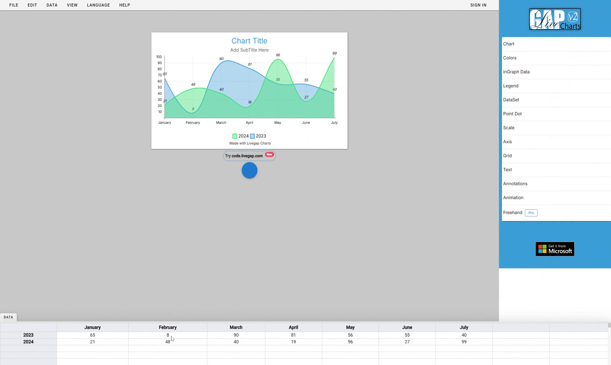
坐标：[0, 0, 2180, 1304] · 原因：first_screenshot
算法版本：experimental_theme_aware_per_step_v2。仅用于预览，生成流程未修改。
返回任务总览 · 查看全部步骤拼图 · 查看算法判断 JSON
左侧为原图预览和选区（绿色：裁剪；蓝色：保留整图），右侧为此算法的输出预览；实验版尚未用于生成。点击图片查看原尺寸；预览自动缩放。像素减少比例不等于 token 减少比例。
[2180, 1304] → [2180, 1304] · 保留像素 100.0% · 场景 0
原图与选区

算法输出预览

坐标：[0, 0, 2180, 1304] · 原因：first_screenshot
[2180, 1304] → [333, 85] · 保留像素 1.0% · 场景 0
原图与选区
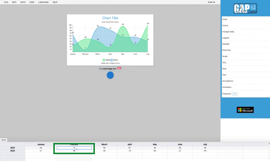
算法输出预览
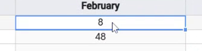
坐标：[433, 1160, 766, 1245] · 原因：localized_change
[2180, 1304] → [335, 78] · 保留像素 0.9% · 场景 0
算法输出预览
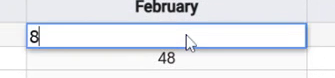
坐标：[432, 1163, 767, 1241] · 原因：localized_change
[2180, 1304] → [1482, 509] · 保留像素 26.5% · 场景 0
原图与选区
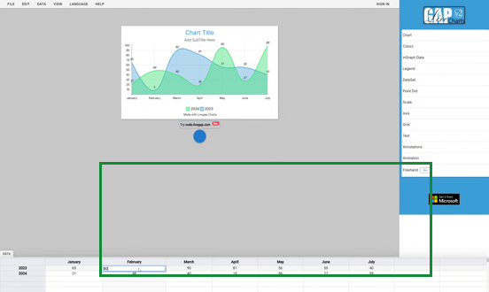
算法输出预览
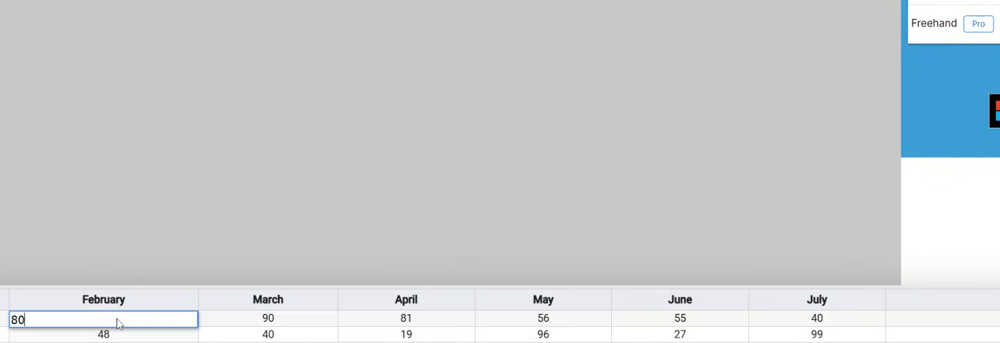
坐标：[445, 725, 1927, 1234] · 原因：localized_change
[2180, 1304] → [1496, 1157] · 保留像素 60.9% · 场景 0
原图与选区
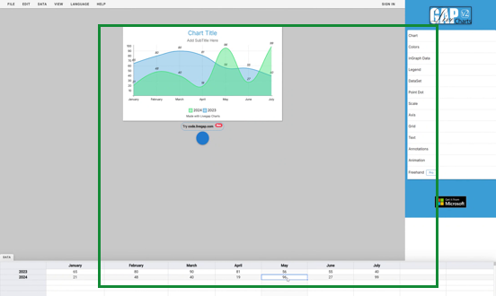
算法输出预览
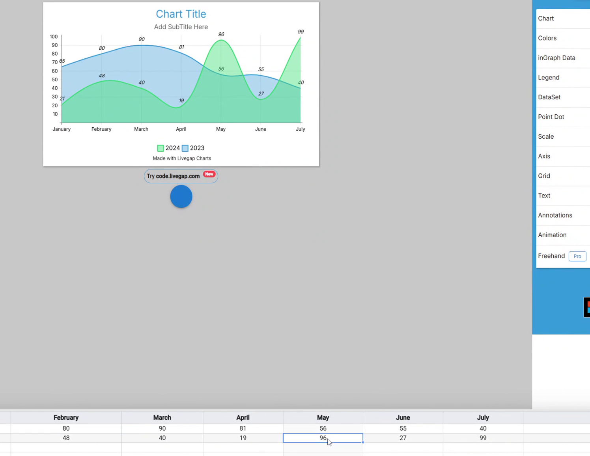
坐标：[431, 110, 1927, 1267] · 原因：localized_change
[2180, 1304] → [258, 82] · 保留像素 0.7% · 场景 0
原图与选区
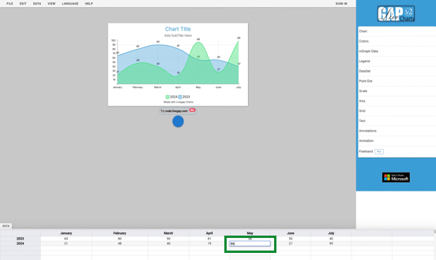
算法输出预览
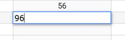
坐标：[1122, 1185, 1380, 1267] · 原因：localized_change
[2180, 1304] → [71, 70] · 保留像素 0.2% · 场景 0
算法输出预览
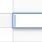
坐标：[1127, 1187, 1198, 1257] · 原因：localized_change
[2180, 1304] → [69, 69] · 保留像素 0.2% · 场景 0
原图与选区
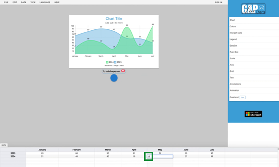
坐标：[1127, 1187, 1196, 1256] · 原因：localized_change
[2180, 1304] → [1403, 1264] · 保留像素 62.4% · 场景 0
原图与选区
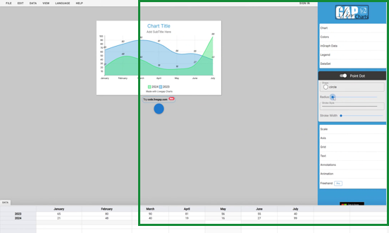
算法输出预览
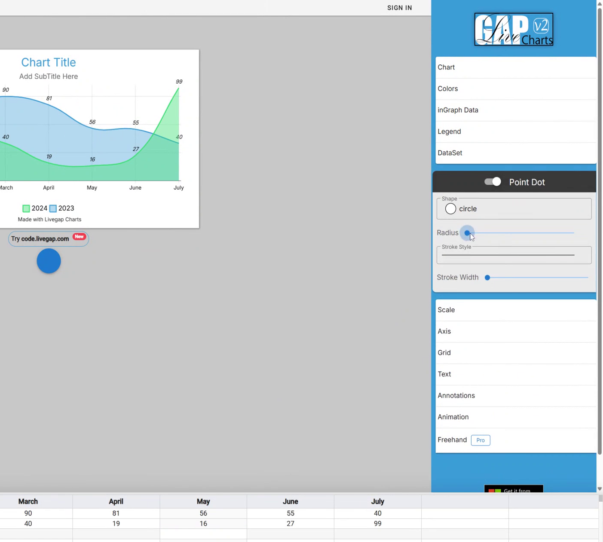
坐标：[777, 0, 2180, 1264] · 原因：localized_change